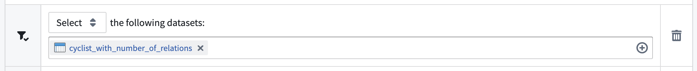
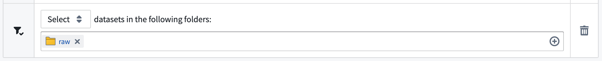
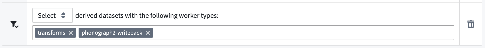
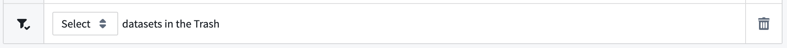
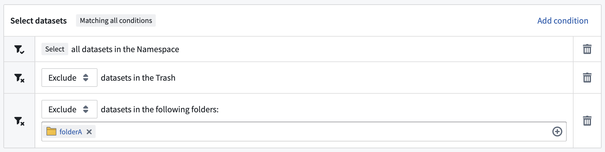
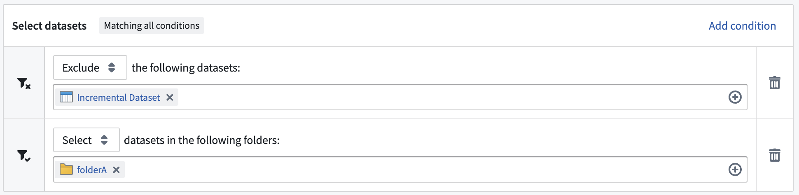

Every dataset selector can be configured to either Select or Exclude the datasets that match the criteria in the selector. For example, Select derived datasets will narrow the funnel to include ONLY derived datasets. Exclude datasets in folder /palantir/finance will narrow the funnel by not including datasets in the given folder.
Some dataset selectors also include a second argument, for example the list of folders or worker types to include or exclude from the policy.
The following list describes the dataset selectors available for use when configuring retention policies in the Retention application.
Selects all datasets by their given RIDs. Note that the dataset RID will not change, even if you rename the dataset.
Learn more about identifying a dataset's RID.
Takes 1 argument: list of datasets (a list of datasets saved by their RIDs).
Select the following datasets: <list of datasets>

Selects all datasets in the given folders or Projects identified by their given RID. Any future dataset created in these folders or Projects will also be subject to this policy.
Takes 1 argument: list of folders (a list of folders or Projects saved by their RIDs).
Select datasets in the following folders: <list of folders>

A dataset is defined to be a derived dataset if, and only if, the following conditions are true:
Datasets that do not meet these conditions, including raw datasets, datasets ingested from an external source, and datasets that were never built on a master branch, will not be selected by this selector.
Takes an optional worker type list as argument: The worker type list is a set of worker types that are specified in the workerType field in the JobSpec (for example, transforms and phonograph2-writeback in the image below). If this field is left empty, this selector will affect ALL derived datasets.
Select derived datasets with the following worker types: transforms, phonograph2-writeback

Select datasets that are in the trash.
Takes no arguments.
Select datasets in the Trash

To demonstrate the dataset selectors and how they can work in combination, consider the following two examples:
The following collection of dataset selectors will select all untrashed datasets in the space which are not contained in folderA:
Select all datasets in the spaceExclude datasets in the TrashExclude datasets in the following folders: folderA
The following collection of dataset selectors will select all datasets in folderA except for Incremental dataset:
Exclude the following datasets: Incremental DatasetSelect datasets in the following folders: folderA
You can protect specific datasets from a given retention policy by using the Exclude mode with the In the following datasets selector. This excludes individual datasets from that policy by their RIDs.
Note that this exclusion applies only to the policy you are configuring. Other retention policies operating in the same space â including recommended (platform-managed) policies and any other custom policies â may still mark transactions on the excluded datasets. To fully protect a dataset, review every policy that could apply to it.
We recommend using the Datasets in the following folders selector instead.
We recommend using the In the following datasets selector instead.